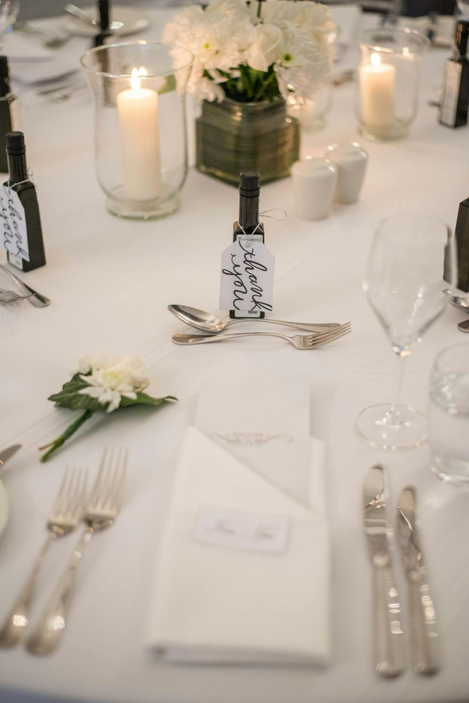
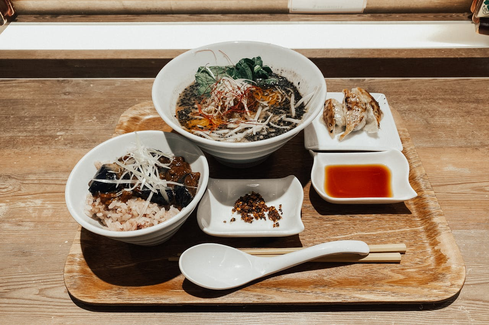

You can see some images of The Spicy Spoon restaurant and its dishes from different sources. Here are some examples:
 There are different ways to contact The Spicy Spoon restaurant, depending on which location you want to reach. Here are some of the contact details for each location: